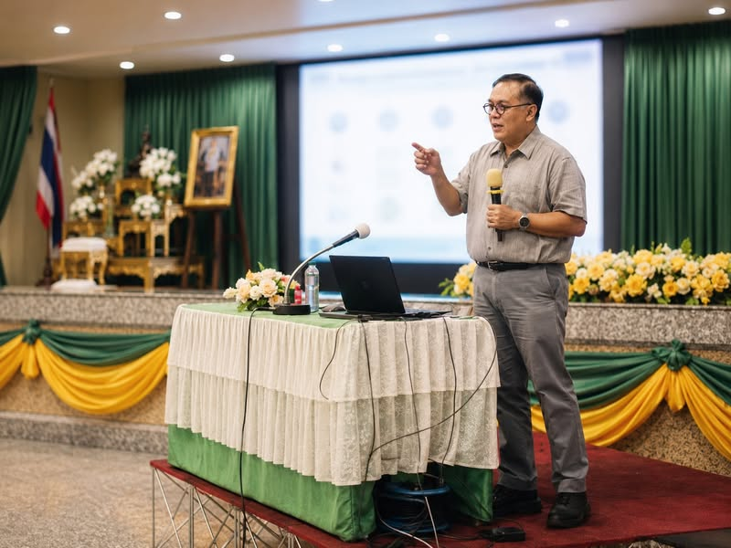

พอร์ตไม่ใช่ที่เก็บอดีต แต่เป็นหลักฐานว่าเราพร้อมเดินต่อทางไหน
{kind=link}

ผมได้กลับไปบรรยายที่โรงเรียนเทพศิรินทร์อีกครั้ง คราวนี้คุยกับนักเรียนสามชั้นปีร่วมร้อยคนเป็นเวลาสองชั่วโมง แม้ก่อนเริ่มยังแอบกังวลว่าเด็ก ๆ จะฟังไหม จะอินไหม หรือเราจะพูดแล้วแป้กหรือเปล่า
สิ่งที่อยากให้น้อง ๆ กลับไปไม่ใช่การจำจำนวนรับหรือชื่อรอบ TCAS ทั้งหมด แต่คือวิธีคิดในการเลือกเส้นทางและสร้างหลักฐานที่อธิบายตัวเองได้
Portfolio ไม่ใช่งานออกแบบกราฟิก
ความเข้าใจที่พบบ่อยคือ TCAS1 เป็นการแข่งขันทำแฟ้มให้สวย ใส่กิจกรรมให้มาก และหวังว่าความหนาจะสร้างความประทับใจ แต่ Portfolio ที่ดีไม่ใช่แฟ้มที่หนาหรือสวยที่สุด
พอร์ตคือหลักฐานว่าเรารู้จักตัวเองพอ รู้จักสาขาที่สมัครพอ และเคยลงมือทำบางอย่างที่เกี่ยวข้องจริง การจัดหน้าช่วยให้หลักฐานอ่านง่าย แต่ไม่สามารถแทนความชัดของทิศทางและคุณภาพของสิ่งที่ทำมาได้
พอร์ตเดียวไม่ควรถูกส่งทุกที่โดยไม่ปรับ
แต่ละมหาวิทยาลัย สาขา และโครงการมองหาหลักฐานต่างกัน บางแห่งเน้นความสามารถเฉพาะ บางแห่งให้ความสำคัญกับการลงมือทำ บางแห่งมีเงื่อนไขคะแนนหรือคุณสมบัติขั้นต่ำที่ต้องผ่านก่อนจะพิจารณาความโดดเด่น
ผู้สมัครจึงต้องอ่านประกาศและทำความเข้าใจว่าโครงการต้องการคนแบบใด แล้วเลือกหลักฐานให้ตอบโจทย์นั้น การปรับพอร์ตไม่ใช่การสร้างตัวตนใหม่ให้ถูกใจกรรมการ แต่คือการเลือกเล่าแง่มุมที่เกี่ยวข้องกับการตัดสินใจของแต่ละโครงการ
สามคำถามสำหรับตรวจพอร์ตของตัวเอง
หนึ่ง — เราสนใจเรื่องนี้จริงไหม พอร์ตควรทำให้เห็นว่าความสนใจมีทิศทาง ไม่ใช่เพียงเลือกสาขาตามกระแสหรือชื่อเสียง
สอง — เราเคยลงมือทำอะไรแล้วบ้าง ความสนใจที่ไม่มีการลงมือทำยังเป็นเพียงคำบอกเล่า ส่วนโครงงาน การทดลอง การแข่งขัน การเรียนรู้ด้วยตนเอง หรือการแก้ปัญหาจริงคือหลักฐานที่ตรวจสอบได้
สาม — สิ่งที่ทำบอกได้ไหมว่าเรามีศักยภาพจะโตต่อในสาขานี้ กรรมการไม่ได้คาดหวังว่านักเรียนมัธยมต้องเป็นผู้เชี่ยวชาญแล้ว แต่ต้องการเห็นพื้นฐาน วิธีคิด ความพยายาม และความสามารถในการเรียนรู้ต่อ
นาทีแรกต้องทำให้กรรมการเห็นแกนของผู้สมัคร
ในนาทีแรกของการเปิดพอร์ต กรรมการควรเห็นได้เร็วว่าเด็กคนนี้เด่นเรื่องอะไร เหมาะกับโครงการใด และมีหลักฐานอะไรทำให้เชื่อ ไม่ควรต้องเดาแกนของผู้สมัครจากแฟ้มหนาหลายสิบหน้า
สิ่งสำคัญควรอยู่ก่อน รายการกิจกรรมควรถูกคัด ไม่ใช่เทรวม และแต่ละชิ้นควรอธิบายบทบาท สิ่งที่เรียนรู้ หรือผลที่เกิดขึ้นอย่างกระชับ การออกแบบที่ดีจึงคือการลดภาระการตีความ ไม่ใช่เพิ่มของตกแต่ง
รอบพอร์ตไม่ใช่ทางหนีจากการเรียนและการสอบ
โอกาสในรอบ Portfolio ไม่ได้ง่าย มหาวิทยาลัยไม่ได้รับเพียงเพราะผู้สมัครมีแฟ้ม และหลายโครงการยังใช้คะแนนหรือเงื่อนไขอื่นประกอบ การเตรียมพอร์ตจึงไม่ควรแลกกับการละเลยพื้นฐานวิชาการหรือการเตรียมสอบ
การวางแผนที่ดีต้องรู้ว่าตนเหมาะกับเส้นทางไหน รอบใด โครงการใด และต้องใช้หลักฐานแบบใด พร้อมมีแผนสำรองหากผลไม่เป็นไปตามคาด
งานแนะแนวคือการช่วยให้เด็กมีภาษาอธิบายอนาคตของตน
การแนะแนวที่ดีไม่ใช่บอกเด็กว่าให้เลือกอะไร แต่ช่วยให้เขามีคำถาม มีข้อมูล และมีภาษาพอที่จะอธิบายว่าเขาเป็นใคร สนใจอะไร และอยากเติบโตไปทางไหน
พอร์ตไม่ใช่ที่เก็บอดีตทั้งหมดของเรา แต่เป็นหลักฐานชุดเล็ก ๆ ที่บอกว่าเราพร้อมจะเดินต่อไปทางไหน
บทความที่เกี่ยวข้อง พอร์ตไม่ใช่เชือกเส้นสุดท้ายของเด็ก แต่เป็นอาวุธเชิงกลยุทธ์ของมหาวิทยาลัย มอง TCAS Portfolio จากอีกด้านว่าเหตุใดมหาวิทยาลัยจึงใช้รอบนี้เพื่อค้นหาเด็กที่มีของจริง